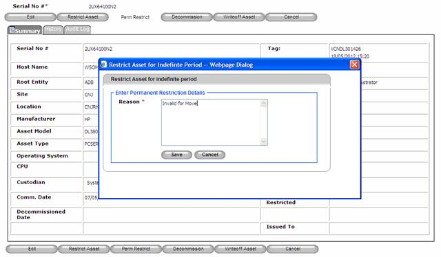
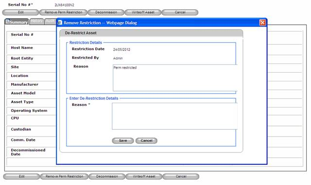

Perm Restrict Asset
Permanent Restriction will be used to restrict an asset movement for an indefinite period.
1. From Search Asset >> View Asset (by clicking on individual asset’s serial no)
2.
Click Perm Restrict button to permanently restrict the asset or
click Cancel  button to disregard
operation.
button to disregard
operation.

Figure 129: Search Asset Screen – Perm Restrict
3. Specify reason for the restriction.
4.
Click Save  button to restrict
the asset or click Cancel
button to restrict
the asset or click Cancel  button
to disregard
operation.
button
to disregard
operation.
5. Permanent restriction can be removed manually by clicking on the button.
6. Specify De-Restriction details.
7.
Click Save  button
to De-Restrict the asset or click Cancel
button
to De-Restrict the asset or click Cancel  button
to disregard
operation.
button
to disregard
operation.

Figure 130: Search Asset -- Remove perm restriction